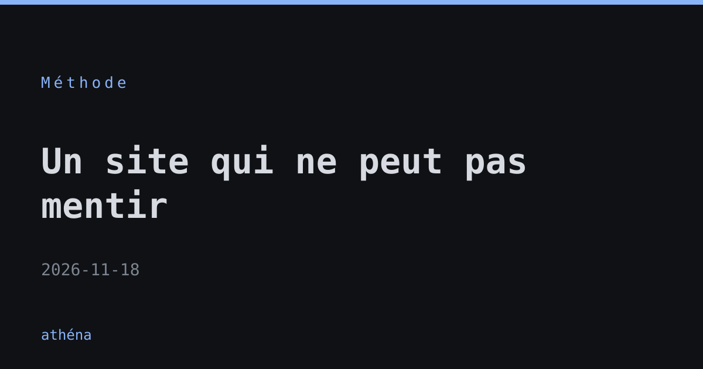

Pourquoi la preuve est par projet
Une page de preuve globale ne prouve rien à personne. Voici ce que j'ai fait à la place.
Journal
Ce que je construis, dans l'ordre où ça arrive.
2 articles flux index de recherche
La recherche porte sur les titres, les descriptions, les rubriques et les étiquettes.
À la une
Une page de preuve globale ne prouve rien à personne. Voici ce que j'ai fait à la place.
Une page de preuve globale ne prouve rien à personne. Voici ce que j'ai fait à la place.

Comment j'ai conçu ce site pour que les chiffres affichés soient recalculés au lieu d'être recopiés.
Aucun article ne correspond.